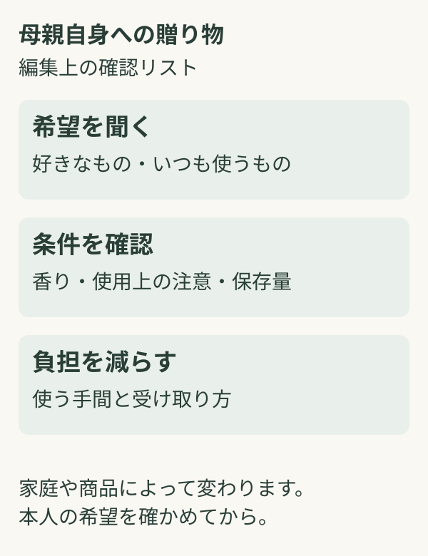

赤ちゃんへのお祝いに、母親自身への小さな贈り物を添える方法もあります。「自分のために使えるものが欲しい？」と聞いて、本人の好みに合わせて選びましょう。

いつも使うものを聞く
ハンドクリームや保湿用品は、いつも使っている商品が分かれば候補にできます。香りや使用感の好みが分からないときは、新しい製品をこちらで決めすぎないようにしましょう。
メーカーが刺激性テスト済みとする製品でも、すべての人に刺激が起きないとは限りません。ピジョンの公式説明にも、その注意書きがあります。[2] 「天然由来だから安心」「親子で共用できる」と一括りにはせず、対象年齢や使用上の注意を製品ごとに確認します。
食べ物や飲み物は、希望を優先
好きな飲み物、苦手な食材、保存できる量を聞いてから選びましょう。ハーブティーを授乳中の人に一律で勧めることはせず、本人が普段選んでいるものを候補にします。
無理にケア用品にしなくてもいい
好きな店で使えるギフトカードや、希望する食事の差し入れも考えられます。体型に触れる贈り物や、使う手間の多いセットは、本人から希望があるときに。
予算と一緒に使い方も考える
金額の目安や特定ブランドのセット価格は、確認が済むまで載せていません。商品の内容、送料、利用条件を販売元で確認し、負担にならない範囲で選びましょう。「赤ちゃんのお祝いとは別に、あなたにも何か贈りたくて」と短いメッセージを添える方法もあります。
よくある質問
希望を聞くとサプライズになりませんか？
品物を決める前に、欲しいジャンルや避けたいものだけ聞く方法もあります。相手が答えやすい範囲で確認しましょう。
希望が分からない場合は？
大きいものや肌に使うものをこちらだけで決めず、本人が使う店のギフトカードなども含めて相談できます。利用条件や期限は購入前に確認しましょう。
参考にした一次情報
[2] ピジョン公式「スキンケア ベーシックシリーズ」。テスト済みでもすべての人に刺激が起きないとは限らない旨の注意を参照。確認日：2026年10月11日。